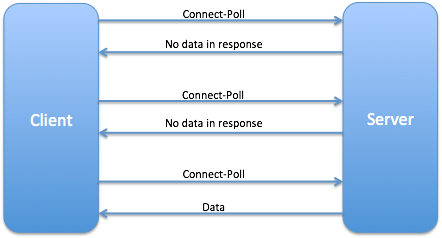
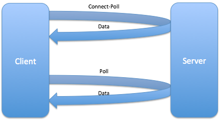

Upgrading HTTP to WebSocket
This chapter is about upgrading from the HTTP protocol to a more responsive HTML5 WebSocket. It starts with a brief overview of the existing legacy Web networking, and then you’ll learn why and how to use HTML5’s Server-Sent Events (SSE) and WebSockets.
The new version of our Save Sick Child application will include the online auction utilizing WebSocket, and you’ll see an example of using Server-Sent Events for broadcasting the up-to-the-minute donation information. The goal is to let you see the advantages of changing the way of client-server communications on the Web. You’ll clearly see the advantages of WebSocket over a regular HTTP by monitoring the network traffic with such tools as Wireshark and Google Chrome Developer Tools.
All the server-side functionality supporting this chapter is written in Java, using Java API for WebSocket reference implementation, which will be the part of upcoming Java EE 7 specification. We are using the latest available build of the Glassfish Application Server. If you don’t know Java, just treat this server-side setup as a service that supports WebSocket protocol. For Java developers interested in diving into the server-side, we’ll provide the source code and brief comments as a part of the code samples that come with this book.
We’ll show and compare the server-side data push done with Server-Sent Events and WebSocket. Also you’ll see a brief overview of popular existing frameworks that can streamline your WebSocket application development.
Near Real Time Applications With HTTP
The HTTP protocol is the lingua franca of today’s Web applications, where client-server communications are based on the request-response paradigm. On the low level, Web browsers establish a TCP/IP connection for each HTTP session. Currently there are 3 basic options that developers use for the browser-server communication: polling, long polling, and streaming. These options are hacks on the top of a half-duplex (a one way street) HTTP protocol to simulate real-time behavior. By real-time we mean the ability to react to some event as it happens. Lets discuss each of them.
Polling
With polling, your client code sends requests to the server after based on some pre-configured interval (e.g. using JavaScript setInterval() function). Some of the server’s responses will be empty, if the requested data is not ready yet as illustrated in Polling. For example, if you’re running an online auctions and sends the request to see the updated bids, you won’t receive any data back unless someone placed a new bid. Visualize a child seating on back seat of your car and asking every minute, "Have we arrived yet?" . And you’re politely replying, "Not just yet" - this is similar to an empty server response. There is no valuable payload for this kid, but she’s still receiving some "metadata". HTTP polling may result in receiving verbose HTTP response headers bearing no data load, let alone destructing the driver (think the server) from performing other responsibilities.

Long Polling
Long polling (see Long Polling ) starts similarly to polling: the client sends the HTTP request to the server. But in this case instead of sending an empty response back, the server waits till the data for the client becomes available. If the requested information is not available within the specified time interval, the server sends an empty response to the client, closes, and re-establishes the connection.
We’ll give you one more analogy to compare polling and long polling. Imagine a party at the top floor of a building equipped with a smart elevator that goes up every minute and opens the door just in case if one of the guests wants to go down to smoke a cigarette. If no one enters the elevator, it goes to the ground level and in 60 seconds goes up again. This is the polling scenario. But if this elevator would go up, and waited till someone would actually decide to go down, then we could call it a long polling mode.
From the HTTP specification perspective this hack is legit: the long polling mode may seem as if we deal with the slow-responding server. That is why this technique also referred as Hanging GET. If you see an online auction that automatically modifies the prices as people bid on items it looks as if the server pushes the data to you. But the chances are, this functionality was implemented using long polling, which is not a real server-side data push, but its emulation.

HTTP Streaming
The client sends the request for data. As soon as the server gets the data ready, it starts streaming (adding more and more data to the response object) without closing the connections. The server pushes the data to the client pretending that the response never ends HTTP Streaming. For example, requesting a video from Youtube.com results in streaming data (frame after frame) without closing the HTTP connection.

Polling and streaming can be used as a fall-back for legacy browsers that don’t support the HTML5 APIs Server-Sent Events and WebSocket.
Server-Sent Events
Before diving into the WebSocket protocol lets get familiar with the standardized way of implementing Server-Sent Events. W3C has published an API for Web browsers to allow them to subscribe to the events sent by the server. All modern browsers support the EventSource object, which can handle events arriving in the form of DOM events. This is not a reqiest-response paradigm, but rather a unidirectional data push - from server to browser. The following code snippet shows how a Web browser can subscribe and listen to server-sent events.
var myEventSource = (function(){
'use strict';
var eventSource;
if ( !! window.EventSource) {
eventSource = new EventSource('http://localhost:8080/donate_web/api/donations/events'); (1)
} else {
// notify use that her browser doesn't support SSE
}
eventSource.addEventListener('open', function(e) { (2)
// Connection was opened.
}, false);
eventSource.addEventListener('create', function(e) { (3)
// do something with data
}, false);
eventSource.addEventListener('update', function(e) { (4)
// do something with data
}, false);
eventSource.addEventListener('error', function(e) {
if (e.readyState === EventSource.CLOSED) {
// Connection was closed.
}
}, false);
return eventSource;
})();| 1 | Create a new EventSource object. At this point the browser will send the GET request to the specified server-side endpoint to register itself on the server. |
| 2 | Add handlers for the open and error events. |
| 3 | Handle messages in create events by processing of the e.data content. |
| 4 | Handle messages in update events by processing of the e.data content. |
The above samples create listeners to subscribe specifically create and update events, but if you’d like to subscribe to any events, you could have used the following syntax:
source.onmessage(function(e){
// process the content of e.data here
});SSE is a good technique for the use cases when the client doesn’t need to send the data to the server. In the above example the server sends two types of custom events create and update to notify subscribed clients about updated donation data so the active clients can monitor the fund-raising process. You can create as many custom events as needed by the application.
The server sends events as text messages that start with data: and end with a pair of new line characters, for example:
'data: {"price": "123.45"}/n/n`SSE is still HTTP-based, and it requires server’s support of the combination of HTTP 1.1 keep-alive connections and the text/event-stream content type in HTTP response. The overhead is minimal - instead of hundreds of bytes in request and response headers, the server sends only the responses when the data has changed.
Introducing WebSocket API
Reducing kilobytes of data to 2 bytes is more than "a little more byte efficient", and reducing latency from 150ms (TCP round trip to set up the connection plus a packet for the message) to 50ms (just the packet for the message) is far more than marginal. In fact, these two factors alone are enough to make WebSocket seriously interesting to Google.
— HTML spec editor at Google
WebSocket is a bi-directional full-duplex socket-based protocol. According to RFC 6455 - the Internet Engineering Task Force (IETF) standard document - the goal of WebSocket technology is to provide a mechanism for Web applications that need two-way communications with servers. This technology doesn’t rely on HTTP hacks or on opening multiple connections using XMLHttpRequest or <iframe> and long polling. The idea behind WebSocket is not overly complicated:
-
Establish a socket connection between the client and the server using HTTP for the initial handshake.
-
Switch the communication protocol from HTTP to a socket-based protocol.
-
Send messages in both directions simultaneously (a.k.a. full duplex mode).
-
Send messages independently. This is not a request-response model as both the server and the client can initiate the data transmission which enables the real server-side push.
-
Both the server and the client can initiate disconnects too.
You will get a better understanding of each of these statements after reading the section WebSocket API later in this chapter.
The WebSocket protocol defines two new URI schemes ws and wss for unencrypted and encrypted connections respectively. The ws (WebSocket) URI scheme is similar to HTTP URI scheme and identifies that a WebSocket connection will be established using TCP/IP protocol without encryption. The`wss` (WebSocket Secure) URI scheme identifies that the traffic over that connection will be protected via Transport Layer Security (TLS). The TLS connection provides such benefits over TCP connection as data confidentiality, integrity, and the endpoint authentication. Apart from the scheme name, WebSocket URI schemes use generic URI syntax.
WebSocket Interface
The W3C expert group uses Interface Description Language to describe what the WebSocket interface should look like. This is how it was defined:
[Constructor(DOMString url, optional (DOMString or DOMString[]) protocols)] (1)
interface WebSocket : EventTarget {
readonly attribute DOMString url;
const unsigned short CONNECTING = 0; (2)
const unsigned short OPEN = 1;
const unsigned short CLOSING = 2;
const unsigned short CLOSED = 3;
readonly attribute unsigned short readyState;
readonly attribute unsigned long bufferedAmount;
// networking
[TreatNonCallableAsNull] attribute Function? onopen; (3)
[TreatNonCallableAsNull] attribute Function? onerror;
[TreatNonCallableAsNull] attribute Function? onclose;
readonly attribute DOMString extensions;
readonly attribute DOMString protocol; (4)
void close([Clamp] optional unsigned short code, optional DOMString reason);
// messaging
[TreatNonCallableAsNull] attribute Function? onmessage;
attribute DOMString binaryType;
void send(DOMString data); (5)
void send(ArrayBufferView data);
void send(Blob data);
};| 1 | The constructor requires an endpoint URI and optional sub-protocols names. A sub-protocol is an application-level protocol layered over the WebSocket Protocol. The client-side application can explicitly indicate which sub-protocols are acceptable for the conversation between the client and server. That string will be send to the server with the initial handshake as Sec-WebSocket-Protocol GET request header field. If the server supports one of the requested protocols it selects at most one of acceptable protocols and echoes that value in the same header parameter Sec-WebSocket-Protocol in the handshake’s response. Thereby the server indicates that it has selected that protocol. It could be a custom protocol or one of standard application level protocols (see Save Sick Child Auction Protocol). For example, it’s possible to transfer the SOAP or XMPP messages over the WebSocket connection. We’ll discuss the handshake in the WebSocket Handshake section. |
| 2 | At any given time the WebSocket can be in one of four states. |
| 3 | These are the callback functions of WebSocket object that will be invoked by the browser once the appropriate network event is dispatched. |
| 4 | This property contains the name of the sub-protocol used for the conversation. After the successful handshake this property populated by the browser with value from servers response parameter Sec-WebSocket-Protocol as described in <1>. |
| 5 | The WebSocket object can send text or binary data to the server using on of the overloaded send() methods. |
The Client-Side API
After introducing the WebSocket interface lets see the code example illustrating how the client’s JavaScript can use it.
var ws;
(function(ws) {
"use strict";
if (window.WebSocket) { (1)
console.log("WebSocket object is supported in your browser");
ws = new WebSocket("ws://www.websocket.org/echo"); (2)
ws.onopen = function() {
console.log("onopen");
}; (3)
ws.onmessage = function(e) {
console.log("echo from server : " + e.data); (4)
};
ws.onclose = function() { (5)
console.log("onclose");
};
ws.onerror = function() {
console.log("onerror"); (6)
};
} else {
console.log("WebSocket object is not supported in your browser");
}
})(ws);| 1 | Not all Web browsers support WebSocket natively as of yet. Check if the WebSocket object is supported by the user’s browser. |
| 2 | Instantiate the new WebSocket object with passing an endpoint URI as constructor parameter. |
| 3 | Set the event handlers for open, message, close events. |
| 4 | The MessageEvent is dispatched when the data is received from the server. This message will be delivered to the function assigned to the WebSocket object’s onmessage property. The e.data property of the message event will contain the received message. |
| 5 | Handle closing connection (more details in Closing The Connection section). |
| 6 | Handle errors. |
WebSocket Handshake
Any network communications that use WebSocket protocol start with an opening handshake. The handshake upgrades the connection from HTTP to the WebSocket protocol. It’s an upgrade to a message-based communications. We will discuss messages (a.k.a. frames) later in this chapter. Why upgrade from HTTP instead of starting with the TCP as a protocol in the first place? The reason is that the WebSocket operates on the same ports (80 and 443) as HTTP and HTTPS do. It’s an important advantage that the browser’s requests are routed through the same ports because arbitrary socket connections may not be allowed by the enterprise firewalls for security reasons. Also, many corporate networks only allow certain outgoing ports. And HTTP/HTTPS ports are usually included in so called white lists.
The protocol upgrade is initiated by the client request, which also transmits a special key with the upgrade request. The server processes this request and sends back a confirmation for the upgrade. This ensures that a WebSocket connection can be established only with an endpoint that support WebSocket. Here is what the handshake can look like in the client’s request:
GET HTTP/1.1
Upgrade: websocket
Connection: Upgrade
Host: echo.websocket.org
Origin: http://www.websocket.org
Sec-WebSocket-Key: i9ri`AfOgSsKwUlmLjIkGA==
Sec-WebSocket-Version: 13
Sec-WebSocket-Protocol: chat
This client sends the GET request for the protocol upgrade. The Sec-WebSocket-Key is just a set of random bytes. The server takes these bytes and appends to this key a special Global Unique Identifier (GUID) string 258EAFA5-E914-47DA-95CA-C5AB0DC85B11, then it creates the Secure Hash Algorithm SHA1 hash from it performs the base64 encoding. The resulting string of bytes needs to be used by both the server and the client, and this string won’t be used by the network endpoints that do not understand the WebSocket protocol. Then this value would be copied in the Sec-WebSocket-Accept header field. The server computes the value and sends the response back confirming the protocol upgrade.
HTTP/1.1 101 Web Socket Protocol Handshake
Upgrade: WebSocket
Connection: Upgrade
Sec-WebSocket-Accept: Qz9Mp4/YtIjPccdpbvFEm17G8bs=
Sec-WebSocket-Protocol: chat
Access-Control-Allow-Origin: http://www.websocket.org
The WebSocket protocol uses the 400 Bad Request HTTP error code to signal the unsuccessful upgrade. The handshake can also include a sub-protocol request and the WebSocket version information but you can’t include arbitrary other headers. We can’t transmit the authorization information. There are two ways around this. You can either transmit the authorization information as the first request (e.g. unique clientId can be passed as part of the HTTP request header or HTML wrapper) or put it into the URL as a query parameter during the initial handshake. Consider the following example:
var clientId = "Mary1989"; (1)
ws = new WebSocket("ws://www.websocket.org/echo/"+clientID); (2)
| 1 | The client the clientId value (can be obtained from some LDAP server). |
| 2 | The client connects to the WebSocket endpoint with an extra URI parameter which will be stored on server for future interactions. |
Because WebSocket protocol creates a bi-directional (socket-to-socket) connection, the server has access to the conversation session associated with such a connection. This session can be associated with clientId and be stored on server.
The WebSocket Frame Anatomy
The WebSocket handshake is the first step to switching to the message framing protocol, which will be layered over TCP. In this section we’re going to explore how the WebSocket data transfer works. The WebSocket is not a stream based protocol like TCP - it’s message based. The difference is that with TCP a program sends stream of bytes, which has to have a specific indication that the data transfer ends. The WebSocket specification makes it easier because it puts a frame around every chunk of data, and the size of the frame is known. JavaScript can easily handle these frames on the client because each frame arrives packaged in the event object. But the server side has to work a little harder as it needs to wrap each piece of data into a frame before sending it to the client. A frame can look like this:
+-+-+-+-+-------+-+-------------+-------------------------------+ 0 1 2 3 0 1 2 3 4 5 6 7 8 9 0 1 2 3 4 5 6 7 8 9 0 1 2 3 4 5 6 7 8 9 0 1 +-+-+-+-+-------+-+-------------+-------------------------------+ |F|R|R|R| opcode|M| Payload len | Extended payload length | |I|S|S|S| (4) |A| (7) | (16/64) | |N|V|V|V| |S| | (if payload len==126/127) | | |1|2|3| |K| | | +-+-+-+-+-------+-+-------------+ - - - - - - - - - - - - - - - + | Extended payload length continued, if payload len == 127 | + - - - - - - - - - - - - - - - +-------------------------------+ | |Masking-key, if MASK set to 1 | +-------------------------------+-------------------------------+ | Masking-key (continued) | Payload Data | +-------------------------------- - - - - - - - - - - - - - - - + : Payload Data continued ... : + - - - - - - - - - - - - - - - - - - - - - - - - - - - - - - - + | Payload Data continued ... | +---------------------------------------------------------------+
-
FIN(1 bit)This bit indicates if this frame is the final in the message payload. If a message has under 127 bytes it fits into a single frame and this bit will always be set.
-
RSV1,RSV2,RSV3(1 bit each)These bits are reserved for future protocol changes and improvements. They must contain zeros as they are not being used at this time.
-
opcode(4 bits)The frame type is defined using opcode. Here are the most used opcodes:
-
0x00This frame continues the payload. -
0x01This frame includes UTF-8 text data. -
0x02This frame includes the binary data. -
0x08This frame terminates the connection. -
0x09This frame is a Ping. -
0x10This frame is a Pong.
-
-
mask(1 bit)This indicates if the frame is masked.
-
payload_len(7 bits, 7+16 bits, or 7+64 bits)The length of the payload. WebSocket frames come in the following length brackets:
-
0-125 indicate the length of the payload.
-
126 means that the following two bytes indicate the length.
-
127 means the next 8 bytes indicate the length.
-
-
masking-key(32 bits)This key is used to XOR the payload with.
-
payload dataThis indicates the actual data. The length of block is defined in the
payload_lenfield.
The Heartbeats
Properly design distributed application has to have a way to ensure that each tier of the system is operational even if there is no active data exchange between the client and the server. This can be done by implementing so called heartbeats - a small messages that simply ask the other party, "Are you there?". For example, proxy servers and content-filtering hardware can terminate idle connections or the server could simply go down. If a client doesn’t send any requests, say for 20 seconds, but the server went down, the client will know about it only when it does the next send(). Heartbeats will keep the connection alive to ensure that it won’t look idling. In the WebSocket jargon heartbeats are implemented with ping and pong . The browser sends the ping opcode 0x9 at any time to ask the other side to pong back (the opcode 0xA).
The Web browser can ping the server when required, but a pong may be sent at server’s discretion. If the endpoint receives a ping frame before responding the the previous one, the endpoint can elect to send just one pong frame for the most recently processed ping. The ping frame may contain the application data (can be up to 125 bytes) and pong must have identical data in its message body.
There is no JavaScript API to send pings or receive pong frames. Pings and pongs may or may not be supported by the user’s browser. There is also no API to enable, configure or detect whether the browser supports pings and pongs.
Data Frames
Since the WebSocket protocol allows the data to be fragmented into multiple frames, the first frame that transmits the data will be prepended with one of the following opcodes indicating the type of data being transmitted:
-
The opcode
0x01indicates the UTF-8 encoded text data. -
The opcode
0x02indicates the binary data.
When your application transmits JSON over the wire the opcode is set to be 0x01. When your code emits binary data it will be represented in a browser specific Blob object or an ArrayBuffer object and sent wrapped into a frame with the opcode 0x02.
You must choose the type for the incoming binary data on the client using webSocket.binaryType = "blob" or webSocket.binaryType = "arraybuffer" before reading the data. It’s a good idea to check the type of the incoming data because the opcodes are not exposed to the client.
|
webSocket.onmessage = function(messageEvent) {
if (typeof messageEvent.data === "string"){
console.log("received text data from the server: " + messageEvent.data);
} else if (messageEvent.data instanceof Blob){
console.log("Blob data received")
}
};Closing The Connection
The connection is terminated by sending the frame with the close opcode 0x08.
There is the pattern to exchange close opcodes first and then let the server to shut down. The client is supposed to give the server some time to close the connection before attempting to do that on its own. The close event can also signal why it has terminated the connection.
A CloseEvent is sent to clients using WebSocket when the connection is closed. This is delivered to the listener indicated by the WebSocket object’s onclose handler. CloseEvent has 3 properties - code, reason, wasClean.
code |
This property represents the close code provided by the server. |
reason |
A string indicating the reason of why the server closed the connection. |
wasClean |
The property indicates if the connection was cleanly closed. |
webSocket.onclose = function(closeEvent) {
console.log("reason " + closeEvent.reason + "code " + closeEvent.code);
};WebSocket Frameworks
Working with the vanilla WebSocket API requires you to do some additional "housekeeping" coding on you own. For example, if the client’s browser doesn’t support WebSocket natively, you need to make sure that your code falls back to the legacy HTTP protocol. The good news is that there are frameworks that can help you with this task. Such frameworks lower the development time, allowing you to do more with less code. We’ve included brief reviews of two frameworks that can streamline your Web application development with WebSocket.
The frameworks mentioned below try to utilize the best supported transport by the current Web browser and server while sparing the developer from knowing internals of the used mechanism. The developer can concentrate on programming the application logic making calls to frameworks API when the data transfer is needed. The rest will be done by framework.
The Portal
The Portal is a server agnostic JavaScript library. It aims to utilize a WebSocket protocol and provides a unified API for various transports (long polling, HTTP streaming, WebSocket). Currently, once you’ve decided to use WebSocket API for your next project, you need to remember about those users who still use old browsers like Internet Explorer 9 or older, which don’t natively support WebSockets. In this case, your application should gracefully fall back to the best available networking alternative. Manually writing code to support all possible browsers and versions requires lots of time especially for testing and maintaining the code for different platforms. The Portal library could help as illustrated in the following brief code sample.
portal.defaults.transports = ["ws", "sse", "stream", "longpoll"]; (1)
portal.open("child-auction/auction").on({ (2)
connecting: function() {
console.log("The connection has been tried by '" + this.data("transport") + "'");
},
open: function() { (3)
console.log("The connection has been opened");
},
close: function(reason) {
console.log("The connection has been closed due to '" + reason + "'");
},
message: function(data) {
handleIncommingData(data);
},
waiting: function(delay, attempts) {
console.log("The socket will try to reconnect after " + delay + " ms");
console.log("The total number of reconnection attempts is " + attempts);
}
});| 1 | The Portal framework supports different transports and can fall back from WebSocket connection to streaming or long polling. The server also has to support some fall-back strategy, but no additional code required on the client side. |
| 2 | Connecting to the WebSocket endpoint. |
| 3 | The Portal API is event-based similarly to W3C WebSocket API. |
The Portal framework generalizes the client-side programming. With defining an array of transports, you don’t have to worry about how to handle message sent by server with different transport. The Portal doesn’t depend on any JavaScript library.
Atmosphere
A Web application that has to be deployed on several different servers (e.g. WebSphere, JBoss, WebLogic) may need to support different WebSocket APIs. At the time of this writing, there is a plethora of different implementations of the server-side libraries supporting WebSockets, and each of them uses their own proprietary APIs. The upcoming Java EE 7 specification intends to change the situation. But Atmosphere is a framework that allows you to write portable Web applications today.
Atmosphere is a portable WebSocket framework supporting Java, Groovy, and Scala. The Atmosphere Framework contains both client and server components for building Asynchronous Web Applications. The Atmosphere transparently supports WebSocket, Server Side Events, long-polling, HTTP streaming, and JSONP.
The client side component Atmosphere.js uses The Portal framework internally and simplifies the development of Web applications that require a fall back from the WebSocket protocol to long polling or HTTP streaming. The Atmosphere Framework hides the complexity of the asynchronous APIs, which differ from server to server and makes your application portable among them. Treat Atmosphere as a compatibility layer that allows to select best available on server transport for all major Java application servers.
The Atmosphere framework supports wide range of Java based server-side technologies via a set of extensions and plugins. The Atmosphere supports upcoming Java API for WebSocket, so you can have best of two worlds - the standard API and application portability.
When Use WebSocket
Since WebSocket protocol has literally no overhead it should be considered for the following types of applications:
-
Live trading/auctions/sports notifications
-
Controlling medical equipment over the web
-
Chat applications
-
Multi-player online games
-
Real-time updates in social streams
For the next version of Save Sick Child application we’re going to use WebSocket to implement an online auction communication layer. The goal is to let individuals and businesses purchase hand-made crafts and arts made by children. All proceeds will go to help sick children.
Having said that WebSocket protocol is a great solution, it has the downside too: the WebSocket specification defines only the protocol for transporting frames, but it doesn’t include the application-level protocol. Developers need to invent the application-specific text or binary protocols. For example, the auction bid has to be presented in a form agreed upon by all application modules. Let’s discuss our options from protocol modeling perspective.
Selecting a message format for your application’s data communications is important. The most common text formats are CSV, XML, and JSON. They are easy to generate, parse, and are widely supported by many frameworks in the most development platforms. While XML and JSON allow you to represent the data in a hierarchical and easily readable by humans form, they create a lot of overhead by wrapping up each data element into additional text identifiers. Sending such additional textual information requires extra bandwidth and may need additional string-to-type conversion on both the client and server’s application code. The binary format is an alternative way of sending data. Let’s discuss the pros and cons of these message formats.
CSV
CSV stands for Comma Separated Values although the delimiter can be any character, not only the comma. This depends on the parser design and implementation. Another popular type of delimiter is | - "pipe" .
Pros:
-
This format is very compact. The overhead of the separator symbol is minimal.
-
It’s simple to create and parse. The CSV message can be turned into array of values by using the standard JavaScript
String.split().
Cons:
-
It’s not suitable for storing complex data structures and hierarchies. In case of an auction application, we need transfer to client auction items' attributes for each auction. In this case we can’t simply use
String.split()and have to design and implement more complex parser.
XML
XML stands for Extensible Markup Language, and it nicely represents any hierarchal data structures.
Pros:
-
It’s a human-readable format.
-
Most browsers have build-in XML readers and parsers.
-
XML data can be validated against XSD or DTD schema.
XML schema is very useful language feature as it defines the structure, content and semantic of XML document. Because of its human-readability the XML schema can be used used by people who are not software developers and can be applied for integrating systems written in different programming languages.
Cons:
-
XML is very verbose. To send a name of a customer you’d need something like this:
<cust_name>Mary</cust_name> -
The XML validation on the client is a complex task. As for now, there is no platform independent solutions or the API to perform validation programmatically based on XSD or DTD.
The book XML in a Nutshell, 3rd Edition by Elliotte Rusty Harold and W. Scott Means is a well-written book describing the full spectrum of XML features and tools.
JSON
As explained in Chapter 4, JSON stands for JavaScript Object Notation, and it’s a way of representing structured data, which can be encoded and decoded by all Web browsers. JSON is widely accepted by the Web community as a popular way of the data serialization.
Google Protocol Buffers
Google Protocol Buffers is a language and platform-neutral extensible mechanism for structured data serialization. Once defined how you want your data to be structured, you can use special generated source code to easily write and read your structured data to and from a variety of data streams.
A developer needs to specify how the serializable information has to be structured by defining the protocol buffer message types in the .proto files. Each protocol buffer message is a small logical record of information, containing a series of the name/value pairs. This protocol buffer message file is language agnostic. The protoc utility compiles proto files and produces language specific artifacts, e.g. .java, .js, etc files.
For example, you can create a protocol buffer proto file for our Save Sick Child to represent the information about donors.
donation.proto )package savesickchild; (1)
option java_package = "org.savesickchild.web.donation"; (2)
message Donor{ (3)
required string fullname = 1;
required string email = 2; (4)
required string address = 3;
required string city = 4;
required string state = 5;
required int32 zip = 6;
required string country = 7;
message Donation{ (5)
required Donor donor = 1; (6)
required double amount = 2;
optional bool receipt_needed = 3;
}
}| 1 | The protobuf supports packages to prevent naming conflicts among messages from different projects. |
| 2 | Here we’re using Java specific protobuf option to define in what package the generated code will reside. |
| 3 | Start defining our custom message with the message keyword. |
| 4 | Each message field can be required, optional or repeated. The required and optional modifiers are self explanatory. During serialization-deserization process the protobuf framework will check the message for existence of fields, and if a required property is missing it will throw a runtime exception. The repeated modifier is used to create dynamically sized arrays. |
| 5 | The protobuf supports nested messages. |
| 6 | There are many standard field types available in protobuf: string, int32, float, double, and bool. You can also define a custom type and use it as a field type. |
After creating the donation.proto file, you can use protoc compiler to generate Java classes according to this file’s definitions.
protoc -I=. --java_out=src donation.proto (1)
.
donation.proto
src
org
savesickchild
web
donation
Donation.java (2)
| 1 | The Java code will be generated in src directory. |
| 2 | All required code for serialization-deserilization of Donation message will be included in Donation.java. We’re not going to publish the generated code here, but you can generate this code by yourself from the provided above message declaration. |
Check the availability of the protobuf compiler for your preferred language at the protobuf wiki page. To make yourself familiar with protobuf technology check documentation and tutorials. Here some protobuf pros and cons:
Pros:
-
The message is encoded into a compact and optimized binary format. You can find the details of the encoding format at Protocol Buffers documentation website.
-
Google supports Protocol Buffers for a wide range of programming languages (Java, C++, Python). The developer’s community supports it too.
-
The use of Protocol Buffers is well documented.
Cons:
-
The binary format is not human readable.
-
Although Protobuf is compact, especially when a lot of numeric values are transferred by an encoding algorithm, the JSON is natively supported by the JavaScript and doesn’t require any additional parser implementation.
-
Protobuf requires the Web browser to support the binary format, but not all of them do it just yet. You can find which browser support raw binary data at http://caniuse.com/#search=binary.
WebSockets and Proxies
The WebSocket protocol itself is unaware of intermediaries such as proxy servers, firewalls, content filters. The proxy servers are commonly used for content caching, security and enterprise content filtering.
HTTP always supported protocol upgrades, but many proxy servers seem to have ignored that part of the specification. Until the WebSocket came around the Upgrade attribute was not used. The problem with Web applications that use long-lived connection like WebSocket is that the proxy servers may choose to close streaming or idle WebSocket connections, because they appear to be trying to connect to the unresponsive HTTP server. Additionally, proxy servers may buffer unencrypted HTTP responses assuming that the browser needs to receive the HTTP response in its entirety.
If you want to get more details on how a WebSocket-enabled application has to deal with proxies there is comprehensive research paper by Google’s Peter Lubbers WebSocket and proxy servers.
| The author of this book use NGINX, a hugely popular load balancer and proxy server to serve static resources (e.g. images and text files), balance the load between Java servers, and for SSL offloading (turning Web browser’s HTTPS requests into HTTP). NGINX uses a very small number threads to support thousands concurrent users as opposed to traditional Web servers that use one worker thread per connection. Recently NGINX started supporting WebSockets protocol. |
Adding an Auction to Save Sick Child
We gave you just enough of a theory to whet your appetite to start implementing WebSocket in our Save Sick Child application. The goal is to create an auction where people can bid and purchase various goods so the proceeds would go to sick children. Auctions require real-time communications - everyone interested in the particular auction item must be immediately notified if she was overbid or won. So we’ll use WebSocket as a means for bidding and notifications of the changes in the auction.
To start the auction, the user has to select the Auction option under the menu Way To Give (see Initially only two modules are loaded). We realize that only a small number of users will decide to participate in the auction, which from the architectural point of view means that the code supporting the auction should be loaded on demand only if the user chooses to visit the auction. This why we need to write this code as a loadable module, and the reader will get a practical example of how a Web application can be modularized.
In this chapter we continue to use RequireJS (see Chapter 7) as a framework for modularization. Using RequireJS, we’re going to lazy load some modules if and only if they get requested by the user.
This book is about development of the user interface and client side of the Web applications hence we’re not going to cover all the details of server side implementation, but will make our server side code available for download. We’ll keep our server up and running so you can test the UI by visiting http://savesickchild.org:8080/project-16-websocket-auction/, but our main goal in this section is to show you how you can exchange the auction data with the server and process them on the client side using WebSocket. We’ll use the Java application server GlassFish 4, which is a reference implementation of the latest Java EE 7 specification.
| Authors of this book are Java developers and we have recorded a screencast (see the readme.asciidoc at https://github.com/Farata/EnterpriseWebBook for the URL) highlighting WebSocket server API. If you are not a Java developer, you may want to learn on your own which WebSocket servers exist for your favorite programming language or platform. |
In Chapter 7 you had a chance to see how a Web application can be sliced (see Aptana’s project-15-dynamic-modules) into several modules using Require.js framework. We’ll take this project as a base and will create a new one: project-16-websocket-auction adding to it the new modules supporting the auction.
js/modules/way-to-give.js)define([], function() {
var WayToGive;
console.log("way-to-give module is loaded");
WayToGive = function() {
return {
render: function() { (1)
// rendering code is omitted
console.log("way-to-give module is rendered");
rendered = true;
return
},
startAuction: function(){ (2)
},
rendered: false (3)
};
};
return WayToGive;
});| 1 | This function will lazy load the auction application content and render it to the top main section of the Web page. |
| 2 | The function startAuction() will start the auction. |
| 3 | The module stores the rendering state in the property rendered. |
Once the application starts, the require.js loads only essential modules - login and donation Initially only two modules are loaded.

In Google Chrome Developer Tools console you can see that login and donation modules are reporting about successful loading. Two modules are loaded during the Save Sick Child application startup confirms that these modules perform fine - clicking on the button Donate reveals the form and clicking on the Login button makes the id/password fields visible.

Now click the Way To Give menu item and keep an eye on the Developer Tools console The auction controls are loaded and rendered. You will see the way-to-give module reporting about its loading and rendering.

Once the user clicks the menu Way to Give the framework require.js has to load code of the WebSocket-based auction module. Here is the code snippet from the JavaScript file app.js - the entry point of our Save Sick Child application. This is how it loads the module on demand (see Chapter 7 for the Require.js refresher).
require([], function() { (1)
'use strict';
return (function() {
var lazyLoadingEventHandlerFactory, wayToGiveHandleClick, wayToGiveModule, way_to_give;
way_to_give = document.getElementById('way-to-give');
wayToGiveModule = null; (2)
lazyLoadingEventHandlerFactory = function(module, modulePath) {
var clickEventHandler;
clickEventHandler = function(event) {
console.log(event.target);
if (module === 'loading') { (3)
return;
}
if (module !== null) {
return module.startAuction(); (4)
} else {
module = 'loading'; (5)
return require([modulePath], function(ModuleObject) { (6)
module = new ModuleObject();
return module.render(); (7)
});
}
};
return clickEventHandler;
};
wayToGiveHandleClick = lazyLoadingEventHandlerFactory(wayToGiveModule, 'modules/way-to-give');
way_to_give.addEventListener('click', wayToGiveHandleClick, false); (8)
})();
});| 1 | This anonymous function will be lazy-loaded only if the user clicks on Way To Give menu. |
| 2 | The variable wayToGiveModule will have a value of null until loaded. |
| 3 | If the user keeps clicking on the menu while the way-to-give module is still being loaded, simply ignore these clicks. |
| 4 | If the module has been loaded and UI has been rendered start Auction application. |
| 5 | Set an intermediary value to the way-to-give module so that subsequent requests don’t try to launch the module more than once. |
| 6 | Load module asynchronously and instantiate it. |
| 7 | Render UI component to the screen for first time. |
| 8 | Register the click event listener for the Way To Give menu. |
After the UI elements have rendered the client can connect to the WebSocket server and request the list of all available auction items.
if(window.WebSocket) {
webSocket = new WebSocket("ws://savesickchild.org:8080/project-16-websocket-auction//child-auction/auction");
webSocket.onopen = function() {
console.log("connection open..."); (1)
getAuctionsList();
};
webSocket.onclose = function(closeEvent) {
// notify user that connection was closed
console.log("close code " + closeEvent.code);
};
webSocket.onmessage = function(messageEvent) {
console.log("data from server: " + messageEvent.data);
if(typeof messageEvent.data === "string") {
handleMessage(messageEvent.data);
}
};
return webSocket.onerror = function() {
// notify user about connection error
console.log("websocket error");
};
}| 1 | After establishing the connection the code requests the list of available auctions. We’ll see details of getAuctionsList() method in next snipped. |
var getAuctionsList = function() {
var auctionListMessage = new AuctionMessage("AUCTIONS_LIST", 'gime', "-1"); (1)
if(webSocket.readyState === 1) { (2)
webSocket.send(auctionMessage.toJson());
} else {
return console.log("offline");
}
};| 1 | Forming the request message. The details of the message format could be found in Save Sick Child Auction Protocol section. |
| 2 | Checking the WebSocket object state. If WebSocket is open (readyState===1) the application can send a message. If not, this code just simply logs the "offline" mesage on the console. In the real world you should always display this message on the user’s UI. Also, if your users work on unstable networks such as cellular or 3G you definitely don’t want to lose any bits of data. It’s a good idea to use the local storage API (see Chapter 1) to persist the data locally until the application gets back online and resubmit the data. |
The user can select the auction lot from the combo box and see its images. The console logs incoming message contains list of auction items. shows what’s displayed on the console, while Using Network feature of Dev Tools we can monitor WebSocket frames. and [FIG9-14] show the content of the Network tab for both images.
Monitor the WebSocket traffic with Chrome Developers Tools
Let’s review the practical use of the theory described in the WebSocket Handshake section earlier. With the help of Chrome Developer Tools you can monitor the information about the initial handshake Initial WebSocket handshake in Chrome DevTools. This can be viewed in the Network tab after selecting the path of the WebSocket endpoint on the left panel.
You can also click on WebSocket at the bottom-right to show only the WebSocket endpoints. Click on Frames in the right panel to view the actual frames being exchanged between the client and server. Monitoring WebSocket frames in Chrome Developer Tools. The white colored rows represent incoming data, and the green (or gray on paper) rows - outgoing.

For more gore details you can navigate your Google Chrome to the secret URL - chrome://net-internals, which is a very useful URL showing a lot of additional information (see Details of initial handshake in Chrome Net Internals and Details of the socket connection ). You can find documentation about net-internal in Chromium Design Documents


Google Developer Tools show just the length of the data. But chrome://net-internals shows the actual size of the WebSocket frame too. Dev tools and net-internals side by side compares the views of net-internals and Developer Tools. As we learned earlier in this chapter, the total size of the frame is slightly different from the size of the payload. There are few more bytes for the frame header. Moreover, all outgoing messages will be masked by the browser (see the note in the The WebSocket Frame Anatomy section). This frame’s mask is going to be transferred to the server as a part of the frame itself, which creates additional 32 bits (4 bytes) overhead.
Sniffing WebSocket frames with Wireshark
Wireshark is a powerful and comprehensive monitoring tool for analyzing the network traffic.You can download it from their web site. To start capturing the WebSocket traffic traffic on localhost select the loopback network interface from the left panel and click "Start" (see Wireshark application main view).

Wireshark captures all network activity. Set up the filter to see only the data you are interested in. We want to capture HTTP and TCP traffic on the port 8080 because our WebSocket server (Oracle’s GlassFish) runs on this port Filter setup. Enter http && (tcp.dstport==8080) in the filter text box and click Apply.
Now the Wireshark is ready to sniff at the traffic of our application. You can start the auction session and place bids. After you’re done with the auction you can return to the Wireshark window and analyze what we got. You can see the initial handshake (GET request on The GET request for protocol upgrade and the Upgrade response on The GET response with protocol upgrade).
GET request for protocol upgradeGET response with protocol upgradeAfter the successful connection upgrade, Wireshark captured the http-alt stream (this is how it reports the Websocket’s traffic) on the 8080 port. Right click on this row and select Follow TCP Stream The GET response with protocol upgrade.
GET response with protocol upgradeOn the next screen you can see the details of WebSocket frame WebSocket frame. We took this screenshot right after the auction application started. You can see here the data with the list of available auctions. The outgoing data is marked with red color and the incoming data is shown in blue.

The screenshot Entire auction conversation was taken after the auction has been closed. You can see here the entire data that were sent over the WebSocket connection.
Save Sick Child Auction Protocol
Since WebSocket is just a transport protocol, we need to come up with the application-level protocol of how the auction messages should be formatted in the client-server interaction. This is how we decided to do it:
-
The client’s code connects to the WebSocket endpoint on the server.
-
The client’s code sends the
AUCTION_LISTmessage to retrieve the list of currently running auctions.The AUCTION_LIST Request{ "type": "AUCTIONS_LIST", (1) "data": "empty", (2) "auctionId": "-1" (3) }1 The type of the message is AUCTION_LIST2 This message doesn’t send any data 3 This message doesn’t request for any specific auction id, so we just send -1.Let’s review the JSON object that will be arriving from the server as the auction’s response.
Response with auction list data{ "type": "AUCTIONS_LIST", (1) "data": [ (2) { "auctionState": "AUCTION_NOT_RUNNING", "item": { (3) "name": "Painting", "description": "Fancy", "startingPrice": 1000.0, "auctionStartTime": 6000, "bidTimeoutS": 30 }, "bestBid": 1000.0, "participantList": [], "auctionId": "first" (4) }, { "auctionState": "AUCTION_RUNNING", "item": { "name": "Handmade hat", "description": "Awesome", "startingPrice": 2000.0, "auctionStartTime": 6000, "bidTimeoutS": 30 }, "bestBid": 2000.0, "participantList": [], "auctionId": "second" } ], "auctionId": "0" }1 The message type is AUCTION_LIST2 The dataproperty of the response object contains the list of all running auctions. An auction can be in one of three states: not running, running, or finished.3 The itemproperty of the response object is a nested object that represents the auction item.4 The auctionIdproperty contains a unique identifier of the selected auction. -
The user picks the auction from the list, enters a desired nick name, and joins to the auction. The client-side application sends the following
loginmessage.{ "type": "LOGIN", (1) "data": "gamussa", (2) "auctionId": "second" (3) }1 The message type is LOGIN2 The dataproperty of the request contains the user’s nickname.3 The auctionIdproperty helps the server-side code to route the message to the correct auction.As soon as the handshake completes successfully, the server side code that implements WebSocketprotocol exposes the WebSocketSessionobject. TheSessionobject encapsulates the conversation between the WebSocket endpoint (server - side) and remote endpoint (browser). Check the documentation for your server side framework for details about how it handles and exposes the remote endpoints in API. -
Each time when the user enters the bid price the client’s code sends following
bidmessage:Bit message{ "type": "BID", "data": "1100.0", "auctionId": "second" }Above is the outgoing message. When user clicks on the "Bid!" button the value from the Bid text box is wrapped into the
BIDmessage. On the server, when the new higherBIDmessage arrives, the messagePRICE_UPDATEhas to be broadcast to all active clients. -
The
PRICE_UPDATEmessageThe PRICE_UPDATE Message{ "type": "PRICE_UPDATE", (1) "data": "1300.0", (2) "auctionId": "second" }1 If some auction participant outbids others, the rest of the participants will receive an update. 2 Such an update will contain the current highest bid. -
The
RESULTmessageThe RESULT Message{ "type": "RESULT", "data": "Congrats! You\u0027ve won Painting for $1300.0", "auctionId": "first" }After the auction ends, the server broadcasts the message with the final auction results. If the wining user is online and connected to the auction server, she’ll receive the message with congratulations. Other participants will get the "Sorry, you didn’t win" notification.
This is pretty much it. The amount of code to implement the client’s side of the auction is minimal. After the connection and upgrade are done, most of the processing is done in the message handler of the WebSocket object’s onmessage.
Summary
After reading this chapter you should see the benefits of using WebSocket protocol in Web applications. In many cases WebSocket is an ultimate means for improving the application performance by reducing the network latency and removing the HTTP-headers overhead. You’ve learned how to integrate the WebSocket-based functionality into the existing HTTP-based application Save Sick Child. There is no need to make the entire communication of the Web application over WebSocket. Use this powerful protocol when it’s clearly improves the performance and responsiveness of your application.
As a side benefit, you’ve learned how to use the network monitoring capabilities of Google Chrome Developer Tools and Wireshark application by sniffing the WebSocket traffic. You can’t underestimate the importance of monitoring tools, which are the best friends of Web developers.